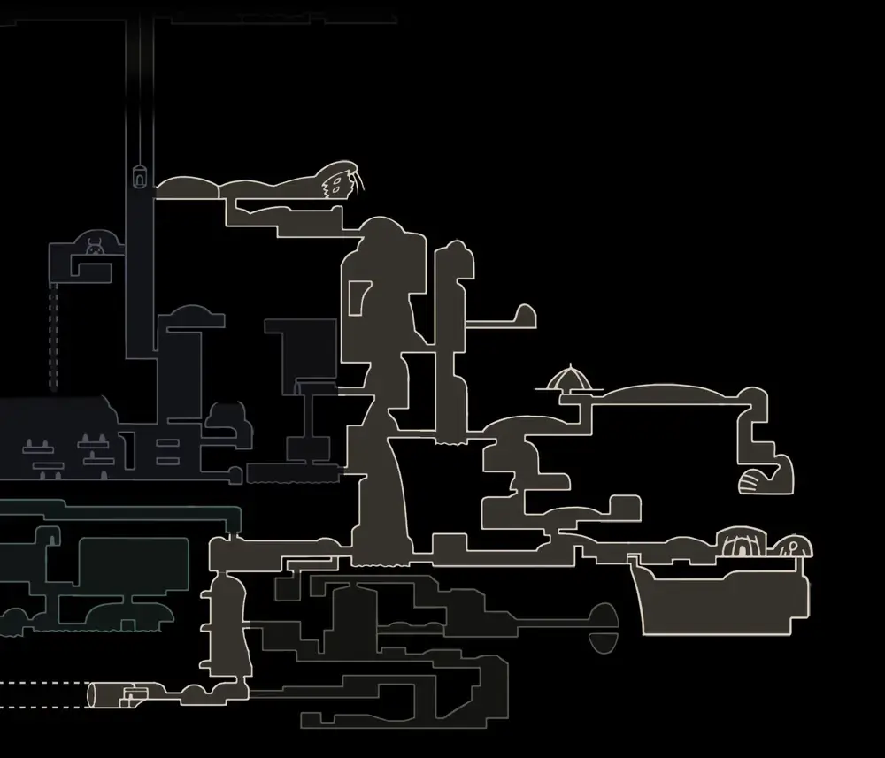
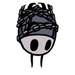
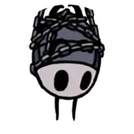

Hollow Knight
Hallownest
Historia
Gran parte de la historia de Hollow Knight no se le cuenta al jugador directamente y, en cambio, se insinúa en los entornos, las interacciones de los personajes y los secretos que debe descubrir jugando. Gran parte de los detalles también se dejan vagos para reflejar y acentuar el estado de Hallownest como un gran reino abandonado. El siguiente es un resumen de los eventos que se explican a través de las piezas clave de información encontradas a lo largo del videojuego.
Inicialmente, el Caballero llega a la ciudad de Bocasucia, una pequeña ciudad situada sobre las ruinas de Hallownest, con la intención de aventurarse para descubrir lo que le espera allí. A medida que avanza por el reino olvidado, se encuentra con los restos reanimados de los antiguos residentes de Hallownest y otras criaturas, siendo transformados lentamente por una misteriosa fuerza. En su camino, El Caballero también se topa con Hornet, la autoproclamada protectora de las ruinas de Hallownest, quien intenta detener la búsqueda del jugador. Posteriormente, El Caballero hace contacto con seres extraños y místicos llamados Soñadores, quienes le imploran que deshaga los sellos, realizados para algún propósito desconocido, y obteniendo el Aguijón Onírico, arma especial capaz de cortar el velo entre la realidad y los sueños, permitiendo al Caballero acceder a las mentes y sueños de los insectos con los que se encuentra. A medida que el jugador continúa su búsqueda, se revela la historia de fondo de Hallownest y del protagonista en sí.

Bocasucia
Los 3 soñadores
Mucho antes del alza del reino, una fuerza similar a una deidad llamada Destello, gobernó agresivamente sobre la especie de los insectos, atrapándolos en sumisión y dejándolos sin voluntad en una especie de mente colmena, con el único propósito de adorarla. Por otro lado, una antigua raza llamada Wyrm también existió durante aquel tiempo, renaciendo uno de ellos como el Rey Pálido, futuro gobernante de Hallownest, quien nunca estuvo bajo la influencia del Destello. El rey otorgó sensibilidad y sapiencia a los insectos, liberándolos del Destello y expandiendo su territorio, estableciendo el reino de Hallownest. Debido a esto, El Destello, enojada y temerosa al ver que sus antiguos esclavos la olvidarían pronto, desencadenó una plaga, denominada simplemente como La Infección, evidenciada a través de la búsqueda del protagonista.

El Destello
El rey palido
El Rey Pálido, desesperado por encontrar una cura, comenzó a experimentar con el Vacío, una energía interminable oscura que yacía en el Abismo debajo del reino. Utilizándolo, esperaba construir un Receptáculo o Vasija, una entidad artificial carente de voluntad o mente, haciéndose inmune de ser infectada por El Destello y lo suficientemente vacía como para contener la infección dentro de su cuerpo. Uno de estos Receptáculos fue considerado digno, siendo elegido por el Rey Pálido y designado como el Hollow Knight para ser el protector de Hallownest. Fue sellado dentro del Templo del Huevo Negro (encontrado al inicio del juego por El Caballero) con la fuente de la infección dentro de sí. No obstante y para protección adicional, el Rey contactó con ciertas mentes de Hallownest con el fin de crear sellos adicionales a este Templo: Monomon la Maestra, Lurien el Vigilante, y Herrah la Bestia, de aquí en adelante denominados como Soñadores. Estos aceptaron la voluntad del Rey Pálido, cayendo en un sueño eterno y manteniendo así sus sellos mágicos sobre la puerta del Templo.
Hollow Knight
Templo del Huevo negro
Sin embargo, la vasija elegida, el Hollow Knight, no estaba totalmente vacía; tenía una idea implantada, sentía devoción y respeto por su creador, por los momentos que había pasado con él. Gracias a esta idea, el Destello se manifestó nuevamente, esparciendo la infección por todo Hallownest. El Rey Pálido desapareció sin ningún rastro o explicación, y el cuerpo del Hollow Knight fue devastado por la infección, lo suficiente como para comenzar a escaparse de las profundidades del Templo. Sin un rey para ayudarlos, Hallownest cayó en la ruina cuando sus ciudadanos fueron asesinados o tomados por la infección. Al descender a su lugar de nacimiento (el Abismo), El Caballero recuerda que él mismo es un Receptáculo fallido, rechazado a favor del verdadero Hollow Knight por el Rey, y que de alguna manera fue capaz de escapar del Abismo, junto con muchas otras vasijas que podemos encontrar esparcidas por el reino a lo largo de nuestro viaje. Al encarar su origen, El Caballero obtiene el Corazón del Vacío, unificando al mismo y sometiéndolo a su voluntad. Los Soñadores, sintiendo la decadencia del Hollow Knight, se manifestaron al protagonista para implorarle que derrotara a su predecesor y tomar su lugar como el nuevo Hollow Knight. Hornet, que se revela como la hija de un Soñador, siente la singularidad del Caballero al enfrentarse al Abismo y recordar el pasado, y le implora que no repita la historia, sino que destruya la fuente de la infección de Hallownest de una vez por todas.
Dependiendo de las acciones del jugador, el juego tiene tres finales "oficiales" posibles:
Primer final: Hollow Knight: El Caballero vence al Hollow Knight , absorbiendo la infección para convertirse en el nuevo Receptáculo. A medida que las cadenas se manifiestan cautivando al nuevo Receptáculo, el Templo vuelve a sellarse manteniendo la Infección nuevamente a raya.
Segundo final: Hermanos Sellados: Si el jugador ha obtenido el Corazón del Vacío antes de la pelea con el Hollow Knight, a mitad de la batalla Hornet aparecerá súbitamente para incapacitar al Hollow Knight, creando una grieta en su máscara. Si el jugador continúa atacando, el Hollow Knight se liberará dejando inconsciente a Hornet, y tras la derrota del primero, El Caballero nuevamente se sellará, pero esta vez con Hornet a su lado, modificando el sello de la puerta del Templo.
Tercer final: No más sueños: Cuando Hornet inmoviliza al Hollow Knight, El Caballero puede usar su Aguijón Onírico para entrar en la mente del Hollow Knight, desafiando directamente a la fuente de la infección y de todo el mal de Hallownest, El Destello. Conforme transcurre la pelea, el Vacío empieza a manifestarse para cumplir su propósito de contener al Destello, quien empieza a ascender para evitar sus garras. Al final de la batalla, el Vacío logra retenerla, y el propio Hollow Knight se manifiesta, abriendo una grieta en el rostro del Destello. El Caballero explota en su forma de sombra y golpea múltiples veces a la fuente de la infección, destruyéndola para siempre. A medida que el Vacío del Templo se desvanece, Hornet despierta, contemplando melancólicamente la máscara rota del Caballero. Así, se puede ver a todas las sombras en el Abismo desapareciendo, pues han cumplido con su cometido de eliminar al Destello, finalizando así el juego.
Areas
Bocasucia
Un pequeño pueblo situado en lo más alto de Hallownest, llegamos a él al poco de empezar el juego. Está conectada con Cruces Olvidados y Paso del Rey, el lugar donde el jugador empieza su aventura. También podemos ir hacia Cumbre de Cristal a través de un ascensor que tendremos que desbloquear
Cruces Olvidados
Estas carreteras antaño eran concurridas por viajeros de todo Hallownest. Pero tras muchos años el deterioro, las plagas de bichos agresivos y los restos de antiguos habitantes, las han transformado en una zona peligrosa. Ésta es la primera área que el jugador explora en su totalidad y dónde se encuentran la mayoría de NPCs que luego irán a Bocasucia.
Sendero verde
Profundiades llenas de vegetación, protegidas por bichos cubiertos de plantas. La gran cantidad de ácido y vegetación dificultan el paso. Para acceder a la zona será necesario derrotar al Baldur anciano tras adquirir el Espíritu vengativo de manos del Chamán Caracol en el Montículo Ancestral. Tras acceder al Sendero Verde el jugador se encontrará a Hornet y la seguirá hasta encontrarla en su primer enfrentamiento.
Cañon Nublado
Una pequeña zona repleta de niebla, burbujas y ácido. En el centro se sitúan los Archivos de la Maestra, casa de la Soñadora Monomon y sus experimentos.
Paramos Fungicos

Son cavernas abarrotadas de esporas. A diferencia del resto de zonas de Hallownest, está habitada por seres fúngicos. Al sur, se encuentra la Aldea Mantis, y al este, la Ciudad de Lágrimas.
Cumbre de Cristal
Localizado al este de Bocasucia, es una alta montaña que fue usada en el pasado como mina por sus preciados cristales.
Ciudad de Lagrimas
Capital de Hallownest y el corazón del Reino; el agua del Lago Azul cae constantemente, creando una lluvia perpetua. Se caracteriza, además, por la presencia de varias torres y edificios como el Santuario de Almas, la Torre del Vigía, Casa de los Placeres y la Torre del Amor. La ciudad es únicamente accesible al principio desde Páramos Fúngicos abriendo la entrada principal usando el Emblema de la ciudad.
Canales Reales
Un alcantarillado formado por una serie de tuberías de desagüe bajo la superficie de Ciudad de Lágrimas. Al este se encuentra un ascensor derruido debido al abandono. Por el noreste podemos encontrar un pozo que conecta con la sala de Emilitia en la Ciudad de Lágrimas.
Limites del Reino
Sitúada al extremo este de Hallownest y con una constante lluvia de ceniza se encuentra el Límite del Reino. Cuerpos procedentes del Coliseo de los Insensatos caen desde arriba para aterrizar en un lago de ácido. Al sureste del área se encuentra un profundo foso que conduce al mayor depósito de Geo del juego.
Tierras de Reposo

Un gran cementerio situado al extremo este de Hallownest. El jugador llega por primera vez cayendo desde Cumbre de Cristal o usando el Tranvía. Aquí encontrará el monumento y la localización de los Soñadores, además de recibir el Aguijón Onírico.
La Colmena
Situada al sur de Límite del Reino. A pesar de estar en Hallownest, las abejas se encuentran al margen de los asuntos del reino.
Cuenca Antigua

La zona más profunda de Hallownest, casi inhóspita. Aquí se encontraba originalmente el Palacio Blanco, hogar del Rey Pálido. Las ruinas del Palacio Blanco se pueden encontrar al este de la zona, junto con el cadáver de una carcasa real que habrá que golpear con el Aguijón Onírico para acceder.
Nido Profundo
Profundidad oculta en la esquina suroeste de Hallownest, repleta de toda variedad de arañas. Al oeste se encuentra Poblado distante, una gran estructura formada por telarañas y que contiene a la Soñadora Herrah
Jardines de la Reina
Una área llena de verjas ornamentadas, espinas y peligrosas plataformas situada al oeste Hallownest. En el pasado se trataba de los jardines de la Dama Blanca, pero fue invadida por las Mantis Traidoras que habían sido desterradas de su tribu.
Acantilados aulladores
Un paraje yermo en el extremo noroeste de Hallownest. Escasamente ocupada por enemigos pero sustentado por los cadáveres de bichos de todos los tamaños. En el extremo oeste se encuentra un poderoso viento que empujará al jugador bloqueándole el paso.
Mapa completo
Exploracion
Mapa y pluma
Un mapa que detalla distintas zonas, salas y pasadizos de Hallownest
Para empezar a cartografiar un Área, el jugador debe comprar primero el mapa incompleto de Cornifer. En el caso de que Cornifer se marche sin haber vendido el mapa (normalmente ocurre tras derrotar el jefe del área), Iselda venderá el mapa en su tienda de Bocasucia a un precio ligeramente superior
Cornifer
Iselda
El jugador puede ver el mapa entero presionando inventario y yendo a la página correspondiente o presionando 2 veces abrir mapa rapido. Otra manera de ver el mapa es manteniendo abrir mapa rapido, esto mostrará el área actual y permitirá al jugador moverse mientras lo mira
Para completar el mapa, el jugador debe comprar la Pluma vendida por Iselda. Tras explorar un área no cartografiada, ésta aparecerá dibujada después de sentarse en un banco
Herramientas
Pluma
Se usa para registrar tus viajes
Requiere un mapa para usarla

Mapa
Mapa de Hallownest, completado parcialmente por Cornifer
No se puede actualizar sin una pluma
Mapa y pluma
Mapa de Hallownest. Al descansar en un banco o en otro lugar, se puede usar la pluma para actualizar el mapa con las zonas recién descubiertas
Viajes Rapidos
El Viaje Rápido es la forma de viajar directamente de un Área a otra. En el juego existen 3 métodos de viaje rápido: Ciervocaminos, Tranvía y Portal Onírico
Ciervocaminos
Los Ciervocaminos son un sistema de túneles conectados entre sí que llevan a distintas estaciones de ciervos. El jugador puede viajar por ellos con la ayuda del Último Ciervo, quien además contará la historia de cada zona que visitemos
La mayoría de estaciones requieren ser activadas insertando Geo en máquinas de peaje. No todas las áreas tienen Estaciones de Ciervos
Después de desbloquear una Estación de Ciervos, el jugador deberá golpear la campana con su Aguijón para llamar al Último Ciervo. Esto también debe realizarse cada vez que el jugador llega a una estación distinta a la última usada
El jugador puede comprar el marcador de estaciones en la tienda de Iselda por 100 Geo
rutas ciervocamino
Ultimo Ciervo
NPCs
Son todos aquellos personajes que nos encontramos a lo largo del reino cada uno de ellos tienen roles distintos dependiendo de su categoria
Comerciantes
NPCs que proveen servicios y venden objetos al jugador
 

Confesor JiJi
Comepiernas
Iselda
Pequeño Insensato
Millibelle
Forjaaguijones
Lemn
Salubra
Sly
Alma de acero Jinn
Ultimo Ciervo
Tuk
Maestros de aguijones
Maestros legendarios que enseñan las Artes del aguijón
Maestro Mato
Maestro Oro
Maestro Sheo
Errantes
NPCs que viajan a lo largo de Hallownest
Cloth
Cornifier
Hornet
Señor Seta
Quirrel
Tiso
Zote
NPCs de misiones
NPCs a los que el jugador debe rescatar o hacer algo por ellos

Bretta
Doliente Gris
Vidente
Padre Larva